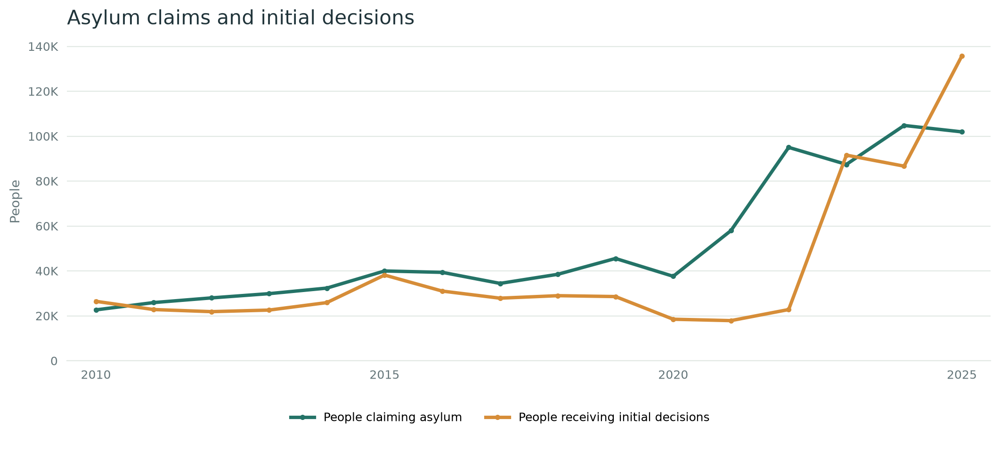
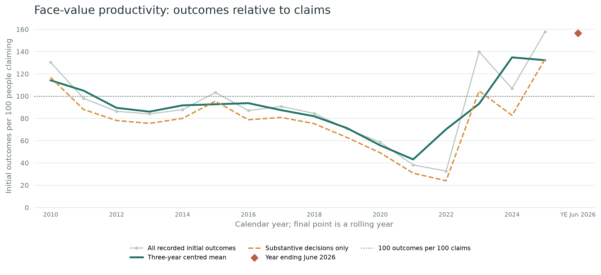
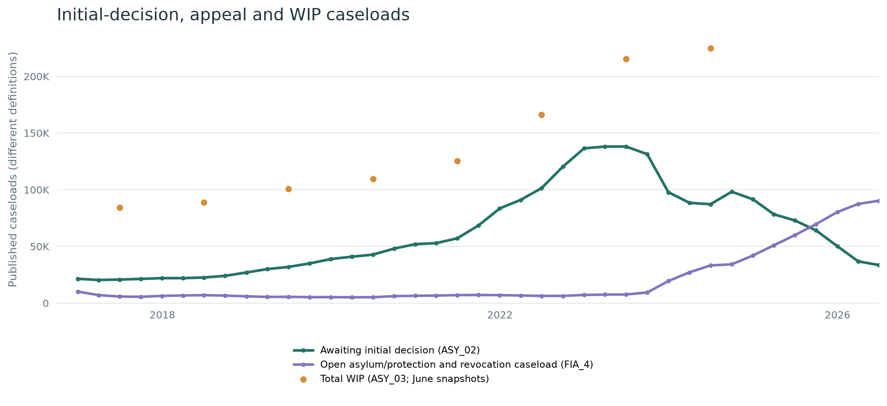
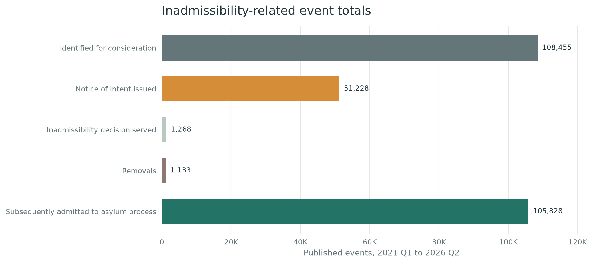
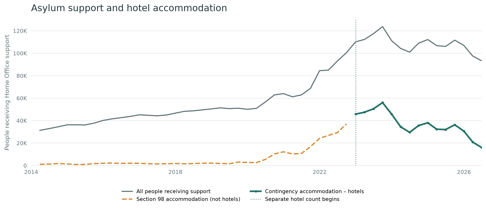

UK asylum, in detail
Claims, decisions, queues and returns in the year ending June 2026
In the year ending June 2026, 85,891 people claimed asylum in the UK and 115,872 received an initial decision. Those decisions included 42,394 grants of protection or other leave and 73,478 refusals. This article presents selected findings from my full UK asylum report, which includes the underlying tables, methods and further analysis.
Claims and decisions are different period flows
The annual chart shows calendar-year claims and initial decisions from 2010 to 2025. It is not a cohort comparison: a decision recorded in a year may concern a claim made earlier. The separate year ending June 2026 figures should not be read as a calendar-year total.

The Home Office’s published initial grant rate for main applicants was 38.1% in the year ending June 2026, down from 42.1% in calendar 2025. It is grants divided by substantive initial decisions—grants plus refusals—and excludes withdrawals and administrative outcomes. It is not calculated from the people-based totals above.
More outcomes than claims does not mean the queue is cleared
The report’s face-value productivity measure compares recorded initial outcomes with claims received in the same period. It counts grants, refusals, withdrawals and administrative outcomes. In the rolling year ending June 2026, 134,484 outcomes against 85,891 claims equalled 156.6 outcomes per 100 claims.

This is a comparison of flows, not a measure of staff productivity or how long an individual waits. Outcomes in a year can relate to older claims, and the ratio is not an estimate of the backlog.
The initial-decision queue fell, while tribunal caseload grew
Within the Home Office’s separate initial-decision series, applications awaiting an initial decision fell from 87,217 in June 2024 to 33,514 in June 2026, a 61.6% decrease. Over that period, the Ministry of Justice’s open asylum/protection and revocation caseload rose from 33,227 to 90,341.

The broader Home Office work-in-progress (WIP) count remains 224,742 main-applicant cases in June 2024, its latest published total; the series is suspended after that date. These figures are separate indicators, not a linked case-by-case account. The published data do not establish whether total WIP is now higher or lower than in June 2024.
Inadmissibility events rarely ended in removal
From 2021 Q1 to 2026 Q2, the Home Office recorded 108,455 identification events for inadmissibility consideration, alongside 105,828 subsequent-admission events and 1,133 enforced-removal events. The framework began on 1 January 2021; when removal to a safe third country within a reasonable period is unlikely, the claim must be admitted for consideration in the UK.

These are aggregate events, not linked outcomes for the same people or a conversion rate. The removals shown are enforced removals; voluntary returns are not included in this series.
Hotel accommodation fell from its peak
Hotel accommodation peaked at 56,018 people in September 2023 and had fallen to 16,021 by June 2026. At that latest date, 93,293 people were recorded as receiving asylum support; the hotel count is a subset, not an additional population.

There were also 12,568 asylum-related returns in the year ending June 2026: 3,841 enforced and 8,727 voluntary. Returns are recorded events, not a count of initial refusals, and may relate to decisions from earlier periods.
What these figures can—and cannot—show
The report keeps calendar years, rolling years and quarters separate and retains the source’s distinctions between people, cases and events. Aggregate flows and stocks are not linked cohorts. In particular, annual differences cannot be added up to estimate the current backlog, and similar queue indicators cannot be combined into one total.
Read the full report, methods and data downloads. Source: UK Home Office asylum summary tables for the year ending June 2026, with reviewed quarterly Home Office and Ministry of Justice data. Reuse is subject to the Open Government Licence v3.0. Independent analysis by Kathryn Hopkins.